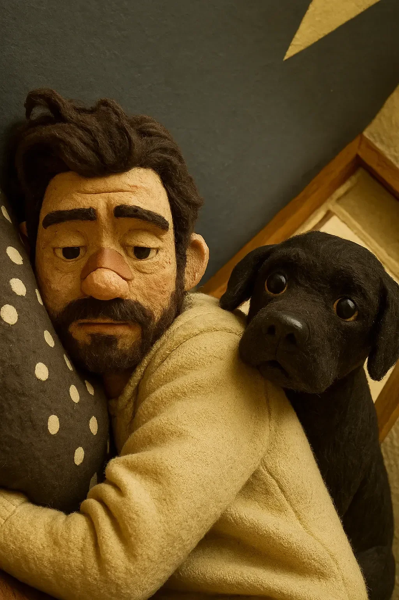

악몽은 시계처럼 정확하게 가장 어두운 시간에 펼쳐졌다. 그때는 데미언의 아파트 너머 도시조차 침묵에 빠져 있었다. 그림자가 그의 침실 벽을 가로질러 뻗어나가며, 어린 시절부터 그를 괴롭혀 온 괴물들로 변해갔다—이제는 낮에 그의 점토 인형들에 생명을 불어넣는 바로 그 상상력에 의해 끔찍한 디테일로 표현되었다.
[The nightmare unfurled like clockwork in the darkest hour, when even the city beyond Damien’s apartment had fallen silent. Shadows stretched across his bedroom wall, transforming into the monsters that had haunted him since childhood—now rendered in terrifying detail by the same imagination that brought his clay figures to life by day.]
“또 이런 일이,” 그는 신음하며 물방울 무늬 베개 속으로 더 깊이 파고들었고, 그의 몸은 베이지색 담요 아래에서 굳어 있었다.
[“Not again,” he groaned, curling deeper into the polka-dotted pillow, his body rigid beneath the beige blanket.]
검은 강아지가 침대 발치에서 머리를 들었다. 달빛을 받아 반짝이는 두 개의 유리구슬 같은 눈이 특이한 집중력으로 데미언을 응시했다. 평범한 반려동물의 공허한 시선이 아니라, 발과 털을 선택하기 전에 세계 사이의 문을 지켜보던 존재의 흔들림 없는 집중력이었다.
[The black puppy lifted its head from the foot of the bed. Its eyes, two glossy marbles catching the moonlight, fixed on Damien with unusual intensity. Not the vacant stare of an ordinary pet, but the unwavering focus of a being who had stood watch at the gates between worlds before choosing paws and fur.]
데미언은 개를 집에 데려올 계획이 전혀 없었다. 그의 아파트는 애니메이션 스튜디오를 겸하고 있었고, 그곳에서는 미니어처 세트와 섬세한 점토 인형들이 질서와 정밀함을 필요로 했다. 개들은 혼돈 그 자체였다. 하지만 지난주, 친구가 그를 보호소로 끌고 갔을 때—"그냥 구경만 할게, 약속해"—한 자원봉사자가 이 특별한 작은 뭉치를 그의 품에 안겨주었다. 그 눈빛에 담긴 무언가가 거절을 불가능하게 만들었다.
[Damien had never planned on bringing home a dog. His apartment doubled as his animation studio, where miniature sets and delicate clay figures required order and precision. Dogs were chaos incarnate. But last week, when his friend had dragged him to the shelter—"Just to look, I promise"—a volunteer had pressed this particular bundle into his arms. Something in those eyes had made refusing impossible.]
악몽이 진행되면서 공포의 촉수가 데미언의 가슴을 감싸안았다. 그의 숨이 가빠졌고, 그의 손가락은 마치 익사하는 사람이 해안을 붙잡으려는 것처럼 담요 가장자리를 움켜쥐었다.
[The nightmare advanced, tendrils of fear wrapping around Damien’s chest. His breath quickened, his fingers clutching at the blanket’s edge like a drowning man grasping for shore.]
강아지는—그 자체로 작은 그림자에 불과했지만—구겨진 침구의 굴곡진 언덕과 계곡을 헤쳐나가 데미언의 가슴에 파고들었다. 그들 사이에서 따뜻함이 퍼져나갔고, 접촉한 곳에서는 특이한 열기가 따끔거렸다.
[The puppy—little more than a shadow itself—navigated the rolling hills and valleys of the rumpled bedding and nestled against Damien’s chest. Warmth radiated between them, a peculiar heat that tingled where they touched.]
“너 뭐하는—” 데미언이 말을 시작했지만, 그림자들이 물러나면서 그 말은 증발해버렸다. 벽은 다시 그저 벽이 되었다. 괴물들은 마치 보이지 않는 손에 쓸려나간 것처럼 사라졌다.
[“What are you—” Damien began, but the words evaporated as the shadows retreated. The wall became just a wall again. The monsters disappeared as though swept away by an invisible hand.]
어린 시절 이후 처음으로, 데미언은 아침 햇살이 그의 천장을 금빛으로 물들일 때까지 잠을 잤다.
[For the first time since he was a child, Damien slept until morning light painted his ceiling gold.]
다음 날 밤에도 같은 공포가 찾아왔고, 같은 기적적인 개입이 있었다. 셋째 날 밤이 되자, 데미언은 시계를 보며 강아지가 어떻게든 앞으로 일어날 일을 알고 있는 것인지 궁금해했다.
[The next night brought the same terror, and the same miraculous intervention. By the third night, Damien found himself watching the clock, wondering if the puppy somehow knew what was coming.]
“집노스,” 다섯째 날 밤, 강아지가 그의 쿵쾅거리는 심장에 몸을 기대자 그는 속삭였다. “네 이름을 이렇게 부를게. 꿈의 수호자.”
[“Zypnos,” he whispered on the fifth night, as the puppy pressed against his thundering heart. “That’s what I’ll call you. Guardian of dreams.”]
집노스의 귀가 그 이름에 쫑긋 세워졌다, 마치 그 선택을 승인하는 것처럼.
[Zypnos’s ears perked at the name, as if approving the choice.]
패턴이 자리 잡았다. 악몽이 다가오기 시작하면, 집노스는 가까이 몸을 기대어 그의 신비로운 존재감으로 어둠을 몰아냈다.
[The pattern established itself. The nightmare would begin its approach, and Zypnos would press close, driving away the darkness with his mysterious presence.]
“너는 마치 내 개인 드림캐처 같아,” 어느 날 밤 데미언이 속삭였다, 그의 수염이 집노스의 부드러운 귀에 스치며. “낮에도 날 도와줄 수 있다면 좋을 텐데.”
[“You’re like my own personal dreamcatcher,” Damien whispered one night, his beard scratching against Zypnos’s silky ear. “If only you could help me during the day too.”]
스튜디오 구석에서, 데미언의 최신 프로젝트는 정체되어 있었다. 점토 인형들—한 소년과 그의 침대 밑 괴물—이 자세로 굳어 있었고, 괴물의 팔은 위협일 수도 있고 춤을 추자는 초대일 수도 있는 자세로 뻗어 있었다. 페스티벌 마감일이 3주 앞으로 다가왔지만, 데미언의 손은 미세한 팔다리를 조정하기에는 너무 많이 떨리고 있었다.
[In his studio corner, Damien’s latest project had stalled. The clay figures—a boy and the monster under his bed—stood frozen in their poses, the monster’s arms outstretched in what could be either menace or an invitation to dance. The festival deadline loomed three weeks away, but Damien’s hands trembled too much to adjust the minuscule limbs.]
집노스가 작업대 옆에 있는 새 침대에서 낑낑거렸다. 데미언은 점토 먼지가 그의 털에 묻지 않도록 그곳에 두었다.
[Zypnos whined from his new bed beside the workstation, where Damien had placed him to keep clay dust from his fur.]
“지금은 안 돼,” 데미언이 중얼거렸다. “이 장면을 끝내야 해.”
[“Not now,” Damien muttered. “I’ve got to finish this scene.”]
하지만 집노스는 고집을 부리며 데미언의 다리를 발로 긁어댔고, 결국 데미언은—피로가 그의 움직임을 물속 안무처럼 무겁게 만든 채—강아지를 자신의 무릎 위로 들어올렸다. 그의 손의 떨림이 가라앉았다. 그의 손가락은 다시 정밀함을 찾았다. 그가 촬영한 스톱모션 프레임에서, 괴물과 소년은 춤을 추기 시작했고, 둘 중 누구도 이끌거나 따르지 않고 완벽한 조화 속에서 움직였다.
[But Zypnos persisted, pawing at his leg until Damien—exhaustion weighing his movements like underwater choreography—lifted the puppy onto his lap. The trembling in his hands subsided. His fingers found their precision again. In the stop-motion frame he captured, the monster and boy began their dance, neither leading nor following but moving in perfect harmony.]
겨울이 봄으로 녹아들면서, 집노스는 작은 발뭉치에서 날렵한 젊은 개로 성장했다. 데미언의 악몽은 매일 밤의 공포에서 가끔 속삭이는 정도로 줄어들었다. 그의 애니메이션—"미드나잇 프렌즈"—는 페스티벌에서 기립 박수를 받으며 첫선을 보였고, 평론가들은 “연결을 통해 변화된 어린 시절 공포의 진정한 묘사"를 칭찬했다.
[As winter melted into spring, Zypnos grew from a bundle of paws into a sleek young dog. Damien’s nightmares faded from nightly terrors to occasional whispers. His animation—"Midnight Friends"—premiered at the festival to a standing ovation, critics praising its "authentic portrayal of childhood fears transformed through connection.”]
“어떻게 그걸 하는 거야?” 어느 날 아침, 햇빛이 그들이 함께 쓰는 침대에 쏟아지며 개의 검은 털을 흑요석처럼 빛나게 할 때 데미언이 집노스에게 물었다. “어떻게 어둠을 물리치는 거야?”
[“How do you do it?” Damien asked Zypnos one morning as sunlight spilled across their shared bed, turning the dog’s black coat to obsidian. “How do you keep the darkness away?”]
더 이상 강아지라고 하기 어려운 집노스는 그저 따뜻한 몸을 더 가까이 기대었고, 그의 눈은 무언가를 알고 있지만 침묵을 지켰다.
[Zypnos, no longer quite a puppy, simply pressed his warm body closer, eyes knowing but silent.]
데미언은 한때 같은 조심스러운 터치로 점토를 빚었던 것을 기억하며 집노스의 털을 손가락으로 쓰다듬었다. 그때 그는 깨달았다. 마법은 집노스 안에 있는 것이 아니라 그들 사이에 있었다. 외로움이 연결에 자리를 내준 그 공간에. 애니메이터가 가장 강력한 이야기는 그가 한 프레임씩 공들여 만든 것이 아니라, 그가 살고 있는 이야기, 마침내 자신의 이야기에서 창조자와 창조물 모두가 된 이야기라는 것을 발견한 곳에.
[Damien ran his fingers through Zypnos’s fur, remembering how he’d once shaped clay with the same careful touch. He understood then. The magic wasn’t in Zypnos—it was between them. In the space where loneliness had surrendered to connection. Where the animator had discovered that the most powerful stories weren’t the ones he crafted frame by painstaking frame, but the one he was living, at last becoming both creator and creation in his own tale.]